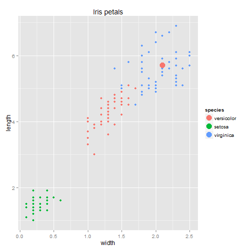

- Unique web application
- Objective: Estimate the petal length of an iris from its species and its petal width
- Highly interactive
- Powerful explanatory graphics
- Public and free !
predictLength = linear regression for each speciesinSpecies = species (as an integer), inWidth = petal width (in cm)dpredict = iris dataframe with the estimated petal lengthpredictLength<-function(inSpecies,inWidth)
{ inSpecFact<-switch(inSpecies,'1'='setosa','2'='versicolor','3'='virginica');
df = iris[,c('Petal.Length','Petal.Width','Species')]; colnames(df)<-c('length','width','species');
lmselect<-lm(length~width,data=df[df$species==inSpecFact,]);
outLength<-predict(lmselect,data.frame(width=inWidth));
dpredict<-data.frame(width=inWidth,length=outLength,species=inSpecFact); }
Example: inSpecies=2 (versicolor); inWidth=2.1; output = length
print(predictLength(2,2.1)$length)
## [1] 5.706857
